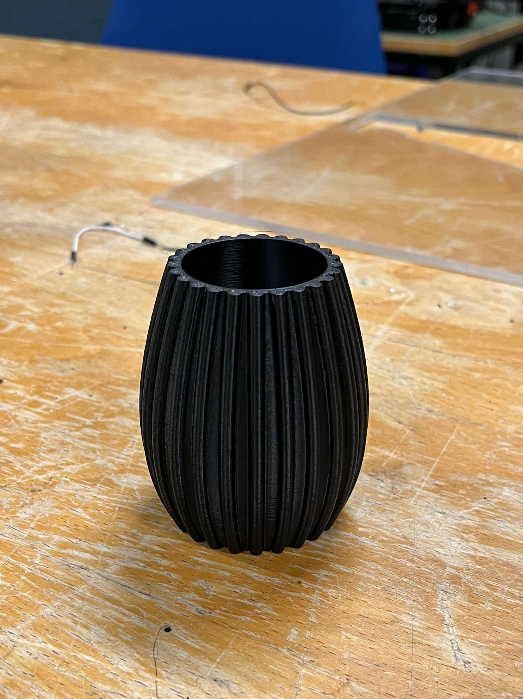
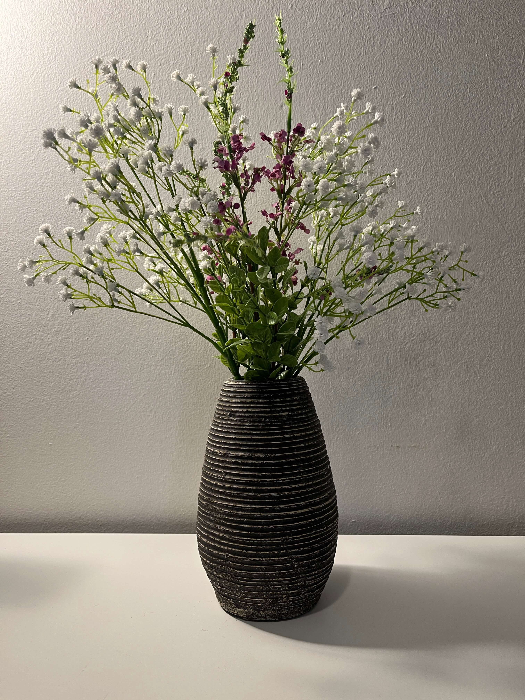
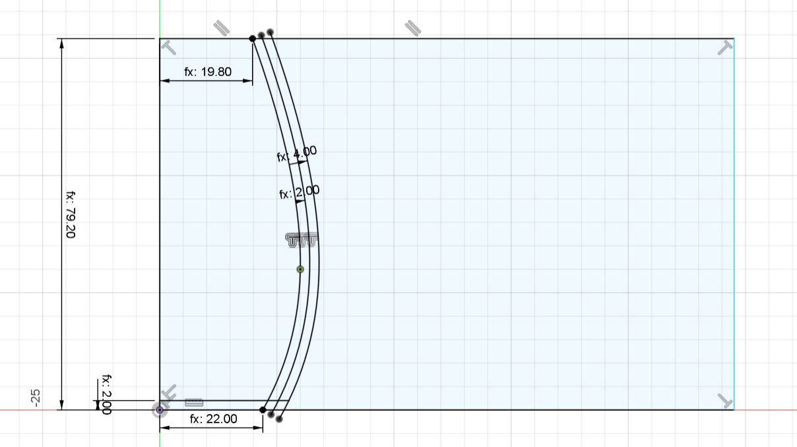
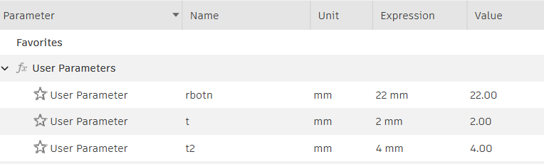
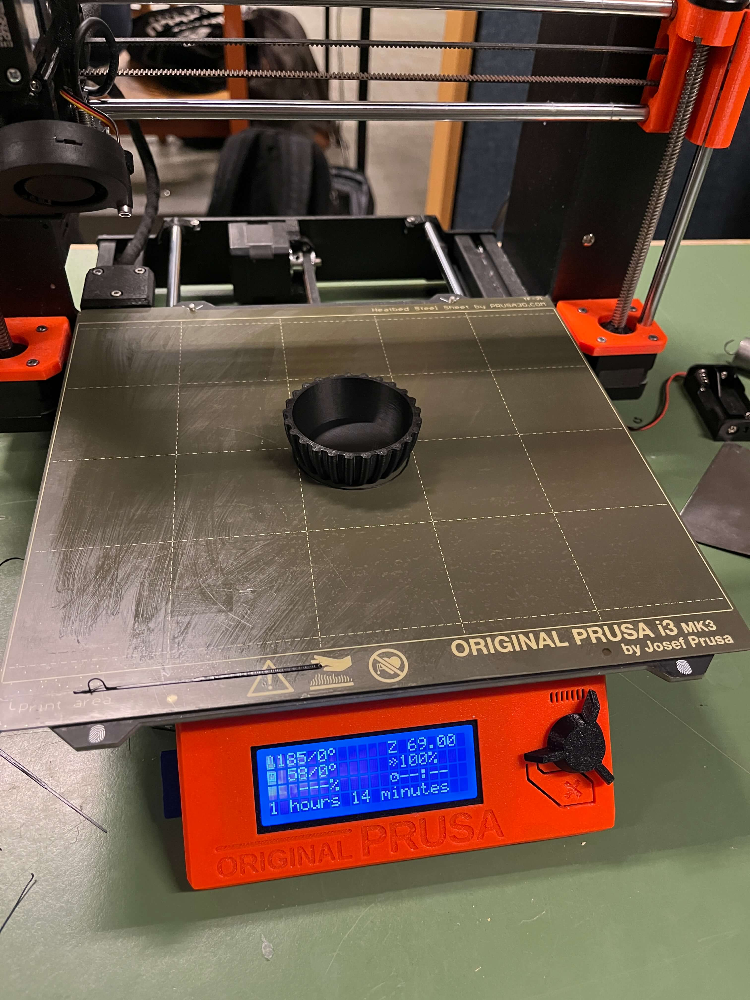
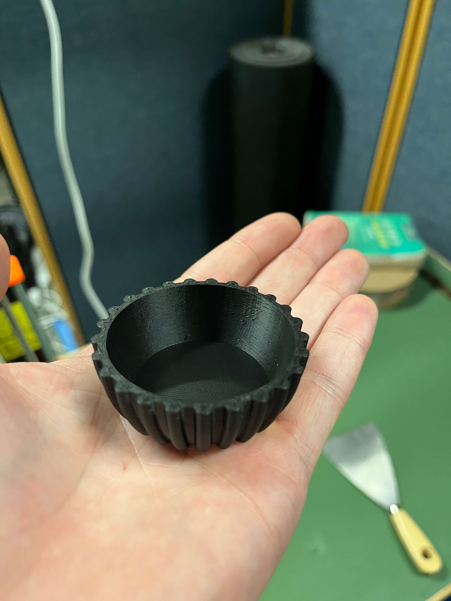
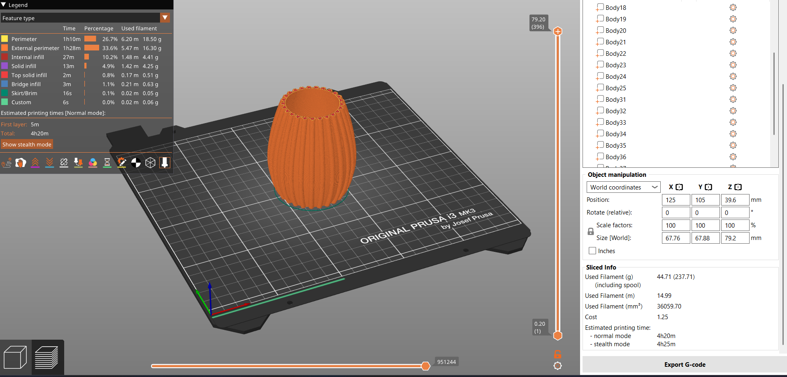
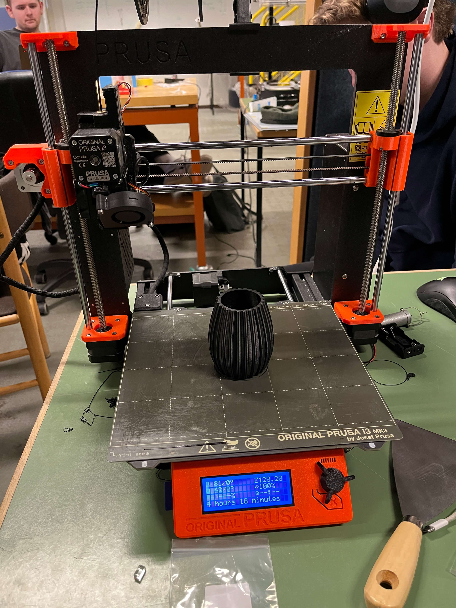

Verkefni 3
3D prentun og skönnun
Verkefnalýsing
Hanna á lítið módel fyrir 3D prentun sem ekki væri hægt að framkvæma með frádráttar framleiðslu (addative vs subtractive). Einnig á að hanna og framkvæma prófanir á 3D prentaranum til að ákvarða hönnunar reglur og skorður áður en módelið er á endanum prentað og síðan útskýra hvað maður lærði af ferlinu. Prentaðu hlutinn með því að nota í mesta lagi 100g af plasti skv slicer. Að lokum skal 3D skanna einhvern hlut. Útskýrðu hvað þú lærðir af ferlinu.
Hugmyndaleit
Í þessu verkefni hannaði ég og teiknaði lítinn blómavasa með rúnuðu mynstri. Sjá mynd hér að neðan

Í fyrstu hafði ég í raun enga hugmynd hvað ég vildi þrívíddarprenta en síðan tók ég eftir blómavasa heima sem var með lárétt mynstur. Þá fór ég að velta því fyrir mér maður myndi hanna svipaðan vasa nema í minni stærð og prófa að hafa annað mynstur. Vasinn er holur að innan með ágætlega flókið mynstur utan á, fasta veggþykkt og breytilegt þvermál og því tel ég hann uppfylla kröfur verkefnisins.

Hönnun
Ég byrjaði á hönnuninni í Fusion og teiknaði útlínu vasans frá hlið þar til hann leit út eins og ég vildi hafa hann. Ég miðaði nokkurn veginn við vasann heima en hann hefur einungis ein beygjuskil í hönnuninni. Ég teiknaði útlínuna í sketch og notaði spline til að teikna bogann. Ég prófaði að bæta við fleiri punktum á bogann gera formið ýktara en mér fannst það koma frekar illa út sérstaklega þar sem ég var að gera vasann í lítilli stærð. Því endaði hönnunin með einum punkti í spline-inu sem ég gat stillt lögunina með. Ég ákvað að nota parametra við teikningu til að gera breytingar á stærðum auðveldari síðar. Eftirfarandi parametrar voru notaðir í sketchinu:

Sketch fyrir vasa

Parametrar
Ég ákvað að hafa botnradíusinn rbotn = 22 mm og hæðin var háð honum með sambandinu h = 2*r*1.8. Ég offsettaði upprunalega sketch-ið um fjarlægð sem nemur veggþykktina, t = 2 mm og revolve-aði þann prófíl til að fá grunnform vasans. Einnig teiknaði ég mynstrið í sketch-ið í fjarlægðinni t2 = 4 mm frá innra yfirborði vasans svo raunveruleg þykkt mynsturins er 2 mm.
Ég leitaði á netinu að aðferðum til að gera mynstur á vasa og rakst að lokum á eftirfarandi myndband sem sýndi skilmerkilega hvernig ætti að gera það.
Ég endaði með þessa hönnun sem má sjá 3D módel af:
Prófun
Áður en ég fór að prenta út hönnunina í fullri stærð þurfti ég að gera prófanir. Ég var ákveðinn í að hafa veggþykktina 2 mm þar sem ég vildi að glasið væri nógu sterkbyggt til að bogna ekki eða brotna undan álagi. Einnig fannst mér það koma betur út útlitslega þegar brúnin á toppnum var ekki of þunn miðað við rendurnar í mynstrinu. Því vildi ég aðallega prófa að sjá hvernig prentarinn réði við fillet-mynstrið. Ég gerði afrit af upprunalegu skránni og breytti hönnuninni örlítið með því að smækka hana þannig að botn radíusinn var 18 mm. Þetta gerði ég til að spara mér aðeins prentunartíma. Einnig gerði ég beygjuna aðeins krappari í byrjun til að sjá hvernig prentarinn réði við það. Ég notaði planesplit í Fusion til að skipta módelinu í tvennt þannig ég gæti valið að prenta aðeins neðsta hluta vasans. Ég komst að því seinna meir að ég hefði getað gert það með auðveldari hætti beint í Prusa-Slicer forritinu en ég tók ekki eftir því þar sem ég var með stillt á beginner mode.

Prentun prufu

Prufa
Það tók rúman klukkutíma og 14 mínútur að prenta prufuna og það gekk vel. Mynstrið á hliðunm kom betur út en ég átti von á. Því þurfti ég ekki að breyta upprunalegu hönnuninni eða nota support.
3D prentun
Ég exportaði módelinu úr Fusion sem 3mf skjali og opnaði það í Prusa Slicer forritinu. Þá gat ég séð módelið og stillt ýmislegt. Ég studdist við myndband frá Hafliða um hvernig á að nota Prusa Slicer. Ég stillti á 0.20 mm SPEED eftir ábendingu frá leiðbeinanda til að minnka prentunartíma, setti infill á 15% og ýtti síðan á "slice now". Þá fékk ég upplýsingar um prentunina og áætlað var að hún tæki um 4 tíma og 20 mínútur og notaði 45 g af plasti. Þá ýtti ég á "Export G-code" og setti skránna sem það gaf á SD-kort til að setja í Prusa Slicer 3D prentarann. Ég valdi að hafa vasann í svörtum lit.

Vasinn kom mjög vel út og smáatriðin eru slétt og svarti liturinn er það djúpur að hann lítur yfirleitt ekki út fyrir að vera úr plasti.

Ég setti 3mf skrárnar fyrir bæði aðal- og prufuútgáfuna hér inn á Thangs.
3D skönnun
Ég hlóð niður appinu Scaniverse á símann minn til að geta 3D skannað einhvern hlut. Pennaveskið mitt varð fyrir valinu þar sem það er mislitt og hefur smáatriði eins og rennilás. Skönnunin gekk vel fyrir sig og tók ekki nema nokkrar mínútur. Upplausnin á pennaveskinu sjálfu er fín en borðið í kring kom skringilega óskýrt út. Ég reyndi að croppa það alveg út í appinu en það reyndist erfitt að ná því án þess að skera hluta af pennaveskinu. Því lét ég það vera og skannið má sjá hér:
Lærdómur dreginn af verkefninu
Gerð þessa verkefnis var afar lærdómsríkt og var frábrugðið þeim framleiðsluaðferðum sem ég hef kynnst hingað til. Það gaf mér betri skilning á hve mikið væri hægt að gera með 3D prentun en einnig takmarkanir við ferlið. Ég vissi frá byrjun að ég vildi hafa vasann frekar lítinn til að lækka prentunartímann en hann tók samt sem áður rúmar 4 klukkustundir. Einnig gerði ég mér grein fyrir takmörkunum varðandi overhang og mögulega þörf á stuðningi.